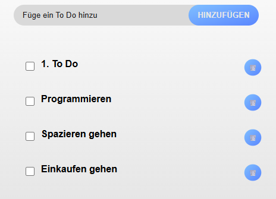
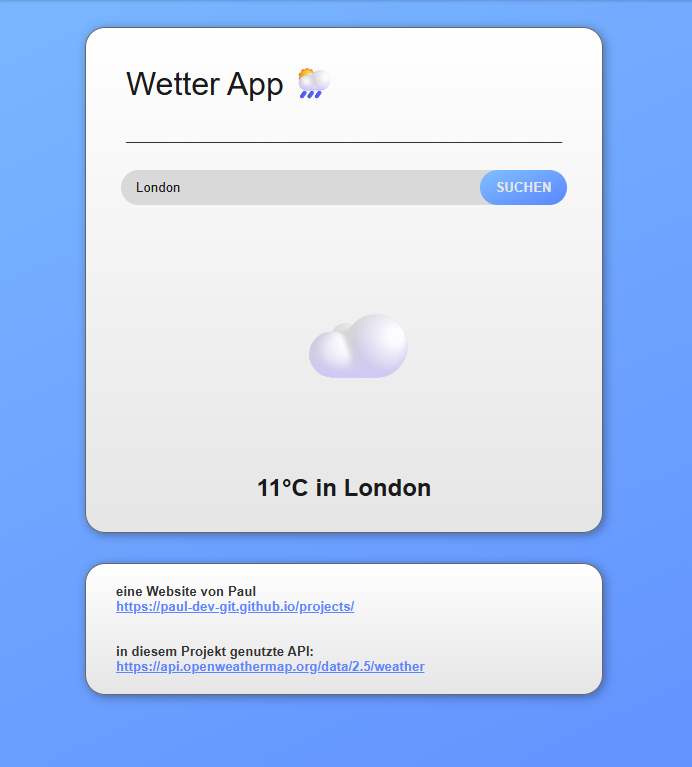
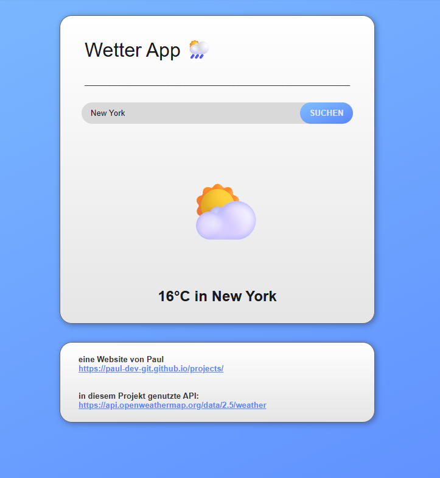

-
Meine Kalorien-Tracker-App
Mit dieser Seite kann man seinen täglichen Kalorienverbrauch mit dem empfohlenen Verbrauch vergleichen, sowie erfahren, wie viel Kalorien oder welchen Nutri-Score ein bestimmtes Produkt hat. Zudem kann man seinen empfohlenen Kalorienverbrauch pro Tag berechnen lassen und Feedback zum eigenen Kalorienverbrauch erhalten.
Dieses Projekt hat mein Wissen über APIs, wie man sie verwendet und was man alles mit ihnen machen kann stark vergrößert und meine JavaScript-Kenntnisse erweitert. Ich hatte viel Spaß am Stylen der Seite mit CSS.___________________________________________


-
Meine To-Do App
Ich habe eine Seite einer To-do-App entwickelt, welche Nutzern ermöglicht, To-dos einer Liste hinzuzufügen, diese abzuhacken und diese zu löschen, sobald man sie Erledigt hat.
Durch dieses Projekt habe ich neu gelernt, wie man mit JavaScript Eingaben des Benutzers zu einer Liste hinzufügen kann sowie das Stylen von Elementen mit CSS.___________________________________________

-
Meine Wetter-App
Mit diesem Projekt ermögliche ich Benutzern, das Wetter an einem bestimmten Standort zu suchen. Dieses wird in Form eines Symbols und der Temperatur in Grad Celsius visualisiert.
Bei diesem Projekt habe ich gelernt, sowohl APIs in Webseiten zu verwenden, als auch das Schreiben von JavaScript, um das Anzeigen der Wetter-Daten von der API zu ermöglichen.___________________________________________
 
-
Meine JavaScript Quiz App
Diese Seite testet dein JavaScript Wissen anhand von 20 Fragen! Nach dem Einloggen deiner Antwort zeigt dir meine Seite die richtige Lösung in Grün, die falschen Lösungen in Rot an! Am Ende erhält man sogar einen Gesamtscore!
Ich habe bei der Erstellung dieses Projekts gelernt, wie mann Arrays mit JavaScript verwendet sowie wie mann Objektattribute, wie die Farbe von Buttons, mit JavaScript ändern kann.___________________________________________